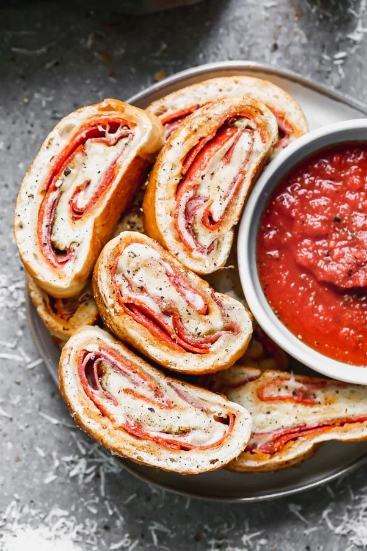

Stromboli

Description
This recipe will walk you through making your favorite 5 ingredient stromboli recipe from start to finish
Ingredients
- 1 lb frozen bread dough or 1 pound of prepared pizza dough
- 1/4 lb sliced pepperoni from the deli counter
- 1/4 lb sliced capicola from the deli counter
- 1 1/2 cups freshly shredded mozzarella cheese
- 1 1/2 tsp pizza seasoning
Steps
- Place dough on a large greased baking sheet. Cover with platic wrap. Let the dough defrost in the fridge for 6-8 hours or overnight. Remove from the fridge and let the dough sit for another hour or two before assembling. You can also use prepared pizza dough if you don't plan ahead, no worries!
- Preheat the oven to 400 degrees. Lightly dust a large working surface as well as a rolling pin. Remove the dough from the baking sheet and roll out to a rectangle 8x13 inches long.
- Layer the pepperoni on top of the dough. Sprinkle with 1/3 of the cheese. Layer the capicola on top followed by the remaining cheese. Sprinkle with 1 teaspoon of the pizza seasoning. Season with a little bit of salt and pepper.
- Tightly roll up the dough, jelly-roll style. Tucks the ends over and pinch eveyrthing closed. (You can also brush the edges with egg wash to help them seal.
- Re-spray the baking sheet with non-stick cooking spray. Transfer the stromboli to the pan. Brush with egg wash if using. Sprinkle with remaining pizza seasoning. Place in the oven and bake until golden brown and crisp, about 20 minutes. Wait 1-2 minutes before cutting into slices and serving.